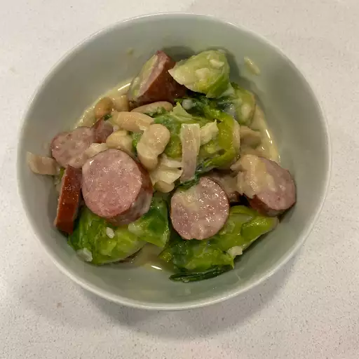

Kielbasa with Brussels Sprouts in Mustard Cream Sauce

Description
Any German can tell you that wurst and cabbage go hand in hand. Any Spaniard will say the same of chorizo and beans. But it takes a special, international inclination to make the case for kielbasa with Brussels sprouts, white beans, and mustard. I'll tell you that it works wonderfully! The saltiness of the pork combined with the bitter, gentle crunch of the Brussels sprouts and mildness of the beans is well-balanced perfection. Plus, it's cheap, easy, and looks good on a plate!
Ingredients
- 1 shallot, peeled and quartered
- 4 large garlic cloves
- 2 tablespoons extra-virgin olive oil
- kosher salt to taste
- 1 ½ pounds Brussels sprouts, halved
- 2 tablespoons coarse Dijon mustard
- 1 teaspoon olive oil
- 1 pound kielbasa sausage, cut on the bias into 1/4-inch slices
- 1 tablespoon olive oil
- ¼ cup heavy cream
- 1 cup white kidney beans, drained and rinsed
- ground black pepper to taste
Steps
- Preheat an oven to 400 degrees F (200 degrees C).
- Place shallot and garlic cloves over two layers of aluminum foil. Coat with 2 tablespoons of extra-virgin olive oil and season with salt. Wrap the shallot and garlic with the foil, creating a pouch. Bake in the preheated oven until the garlic is tender, about 30 minutes. Place shallot and garlic in a bowl and mash using a fork. Set aside.
- Meanwhile, place a steamer insert into a saucepan, and fill with water to just below the bottom of the steamer. Cover, and bring the water to a boil. Add the Brussels sprouts, cover, and steam until just tender, 2 to 6 minutes depending on thickness. Set aside.
- Heat 1 teaspoon olive oil in a large, deep skillet over medium-high heat. Lay the kielbasa into the hot skillet and cook, turning occasionally, until evenly browned and crispy, about 3 minutes on each side. Remove the kielbasa from the skillet with a slotted spoon to retain the grease in the skillet; drain the sausage slices on a paper towel-lined plate.
- Add 1 tablespoon of olive oil to the skillet. Cook the mashed shallot and garlic in the hot oil for 1 minute. Stir in the mustard and cream. Reduce the heat to medium-low and add the Brussels sprouts and beans. Toss to coat and season with salt and pepper. Continue cooking until heated through. Serve the kielbasa over the Brussels sprouts and beans.
Go back